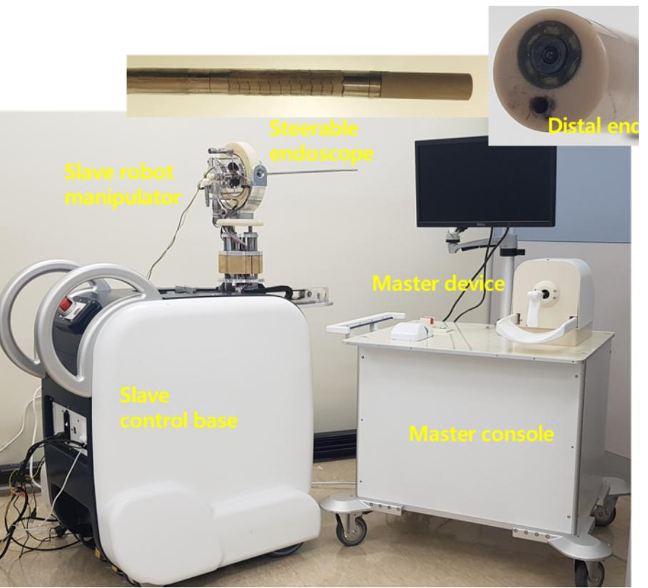
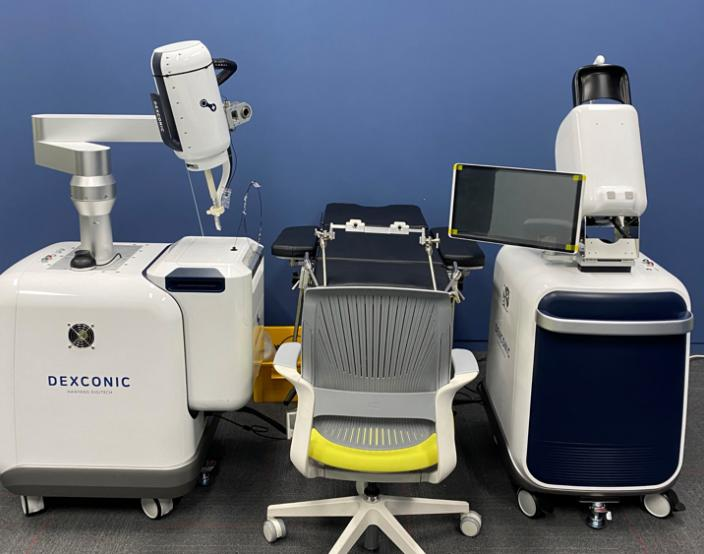

My research activities include the design, kinematic and structural analysis, algorithm development, simulation, and control of mechanisms, devices, and robots applicable to the clinical field, along with their prototyping and evaluation.

Transurethral resection of bladder tumor (TURBT) is a common method in urology for the diagnosis and treatment of bladder cancer, especially in non-muscle invasive bladder cancer. However, the surgery using the resectoscope, which is one of rigid-type endoscopy with a resection loop, has some limitations and difficulties such as difficulty in approach to deep parts of the bladder, uncomfortable posture of the surgeon during surgery, and inconsistency of the master-slave coordinate system.

The transoral surgery is to remove mouth or throat cancer in which the surgeon uses a complicated computer system, laser dissector, and surgical tools. To enhance the surgical procedure more accurately and safely, robotic systems for transoral surgery with continuum sections has been developed worldwide. In this project, we develop a slave end-effector with a flexible endoscopic mechanism and master interface as core components of a tele-operative transoral surgery robot system. The end-effector is designed as the continuum robot module with ball-socket joints and translational module for 4 DOF motion. The master interface is also designed to give a user command for the slave end-effector's motion. The final goal of the system made by collaboration with Hanyang Digitech, KIST, and Asan Medical Center (optics) is to perform clinical trial for one or two patients with tonsilitis.